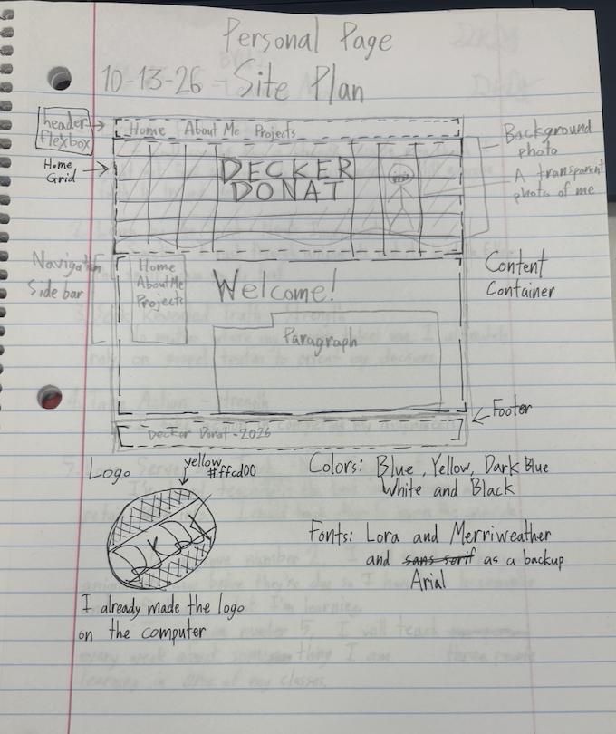
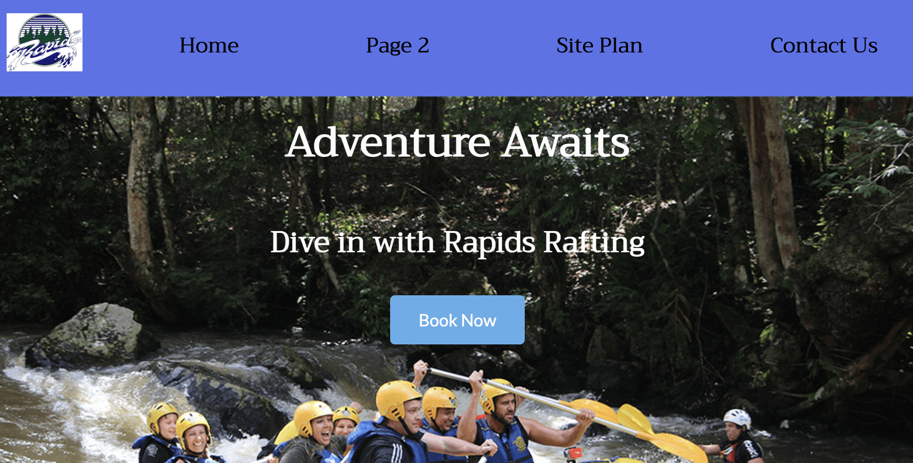

PROJECTS
A list of all the Projects I've done in WDD-130. Click the title of the project in order to navigate to open that page in a new tab.

Project Portal Page (This Website)
To be honest, it was a little intimidating switching gears from a hand-holdy project with detailed instructions to a project thats leaves you to do everything yourself. Despite this, I feel like it wasn't too hard to make this website on my own. Focusing on a specific part of the development process each week lightened the work load, that is, as long as I kept up with each week. Even though this is still a work in progress, I'm proud of how this website has turned out.

White Water Rafting Page
One of the first big projects of the class. Working on this project taught me the basics of web development. For example, positioning with margin and padding, links with the a tag, using a css stylesheet, overlapping elements with the grid display and z-index, and more. While this assignment was a great introduction to the basics, it was a bit difficult to learn when we were just supposed to follow the instructions. But I feel like, with so much to learn with html and css, this was a good way to ease into the basics before know exactly what was going on.